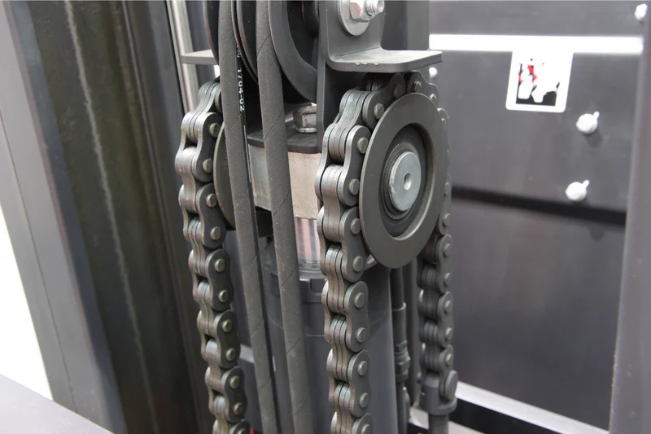
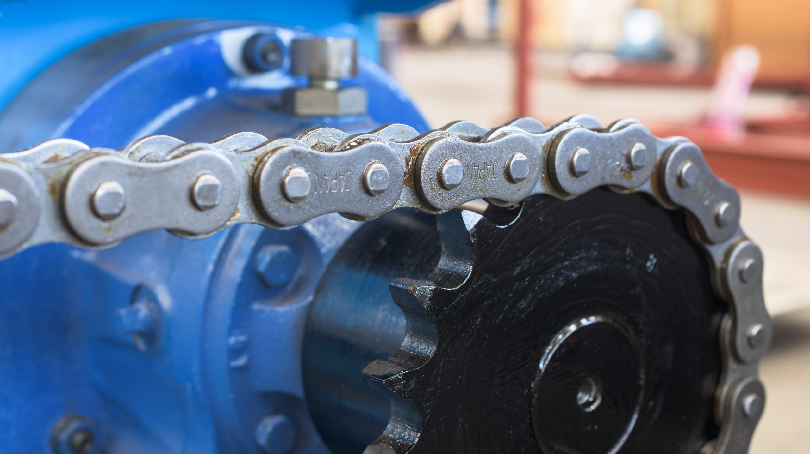
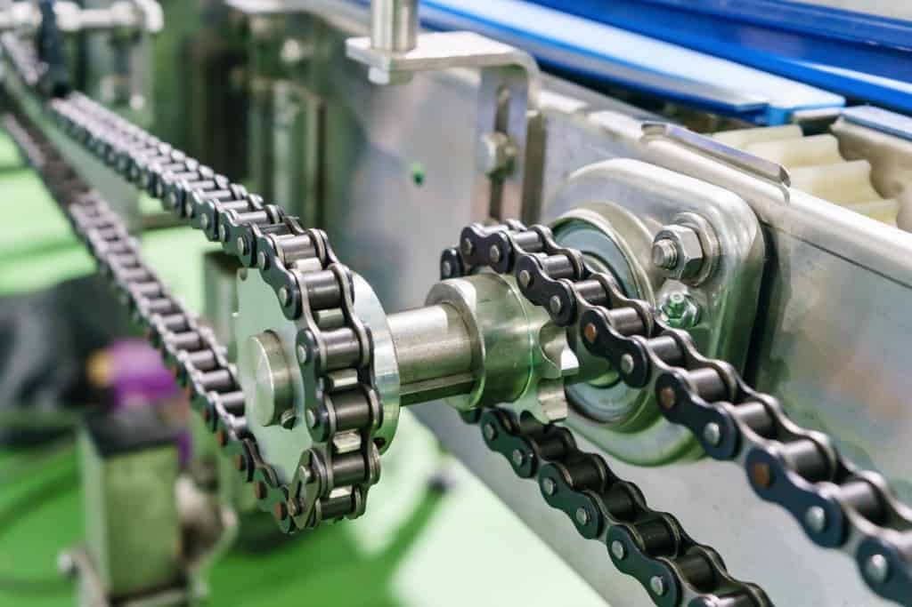
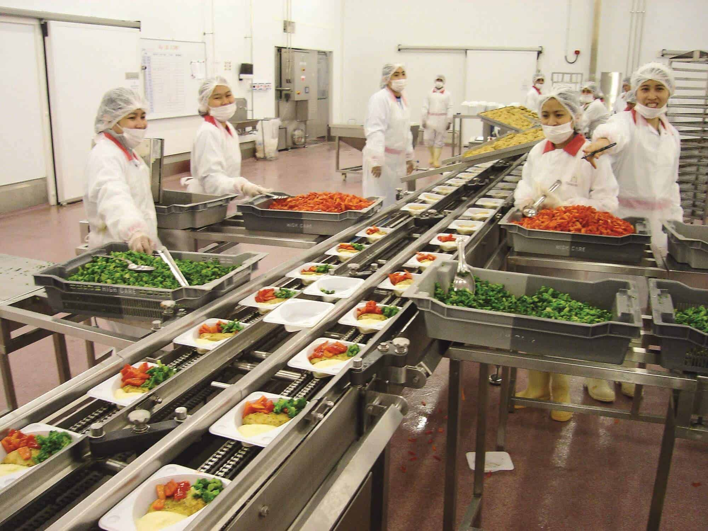
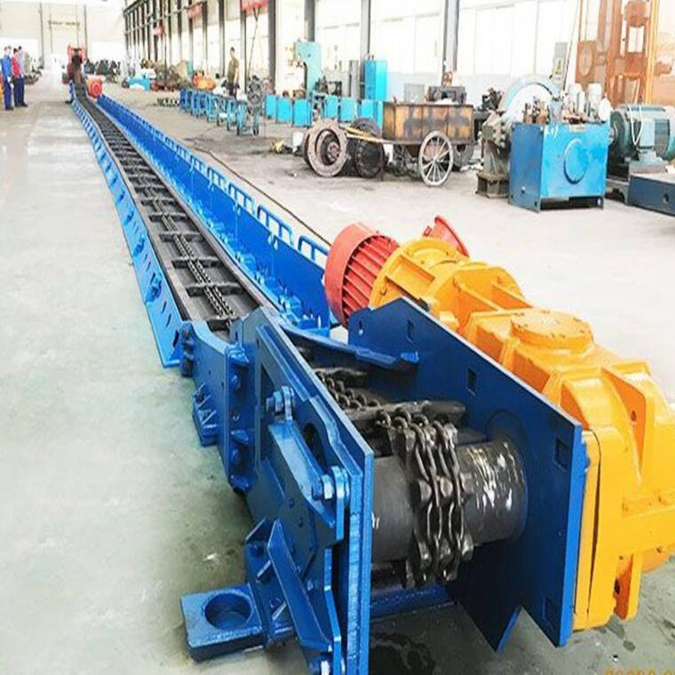

산업용 체인 분류 및 규격
Belt 전환 가능 여부
전환 유망
전환 가능
전환 불리

| 체인 번호 | 용도 예시 | 최소 인장강도 |
|---|---|---|
| LH0844 (BL444) | 1~1.5톤급 지게차 | 4,538 kgf |
| LH1044 (BL544) | 2~3톤급 지게차 | 6,801 kgf |
| LH1246 (BL646) | 5톤 이상 대형 장비 | 9,687 kgf |


| 체인 번호 | 주요 용도 | 최소 인장강도 |
|---|---|---|
| 08B-1 | 소형 기계, 경하중 구동 | 1,815 kgf |
| 12B-1 | 일반 산업기계, 중형 구동 | 2,947 kgf |
| 16B-1 | 대형 산업기계, 중하중 구동 | 6,118 kgf |

| 체인 번호 | 주요 용도 | 최소 인장강도 |
|---|---|---|
| C2040 | 경량 이송, 소형 컨베이어 | 1,438 kgf |
| C2060 | 일반 물류·식품 라인 | 2,947 kgf |
| C2080 | 중량물 이송, 대형 컨베이어 | 6,118 kgf |

| 구분 | 적용 | 벨트 전환 | 사유 |
|---|---|---|---|
| 소 | 파종기·비료 살포기·소형 사료 이송 | 가능 | 저속·경하중, 정밀 위치 제어에 벨트 유리 |
| 중 | 콤바인 곡물 이송·베일러 구동 | 조건부 | 분진·돌멩이 충격으로 벨트 표면 손상 리스크 |
| 대 | 멀티실린더 메인 드라이브·PTO 구동 | 한계 | 다축 동시 구동 + 복잡한 경로 + 현장 정비 불가 |

| 구분 | 적용 | 벨트 전환 | 사유 |
|---|---|---|---|
| 소 | 골재·모래 선별기 구동, 소형 버킷 엘리베이터 | 조건부 | 밀폐 커버 + 이물 제거 시스템 병행 시 가능 |
| 중 | 시멘트 클링커 이송, 중형 스크레이퍼 컨베이어 | 한계 | 클링커 900°C 이상, 벨트 내열 한계 초과 |
| 대 | 대형 채탄기·초대형 광산 스크레이퍼 (49,000 kgf급) | 한계 | 극한 충격·고하중, 원형 링크 구조 대체 불가 |
| 구분 | 적용 | 벨트 전환 | 사유 |
|---|---|---|---|
| 소 | 양식장·소형 선박·계측 장비 (SUS316) | 가능 | 경하중, 부식 면역 벨트 강점 명확 |
| 중 | 항만 크레인·하역 컨베이어 (선급 인증 필요) | 조건부 | 선급 인증 필요, UV + 염분 내구성 검증 필요 |
| 대 | 오프쇼어 계류·앵커 (수백 톤급) | 한계 | 수백 톤 하중, IACS 선급 인증 + 실증 환경 확보 어려움 |